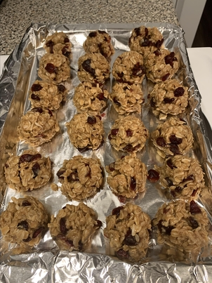

Peanut Butter Balls

Description
Healthy, not to sweet, a great snack for anytime! Your children will love it!
Nutrition Per Serving: 217 calories; protein 5.1g; carbohydrates 23.8g; fat 12.2g; sodium 34.6mg.
Ingredients
- ¾ cup brown rice syrup
- ½ cup coconut oil
- 1 cup natural peanut butter
- 1 teaspoon vanilla extract
- 3 cups oats, or more to taste
- 1 cup raisins
- ½ cup unsweetened flaked coconut
Steps
- Combine brown rice syrup and coconut oil together in a saucepan over medium heat; cook and stir until melted and boiling, 3 to 4 minutes.
Remove saucepan from heat.
- Mix peanut butter and vanilla extract into syrup mixture until smooth. Add oats, raisins, and coconut to peanut butter mixture and mix well.
Refrigerate mixture until cool, at least 30 minutes. Form mixture into balls and freeze until set, at least 1 hour.